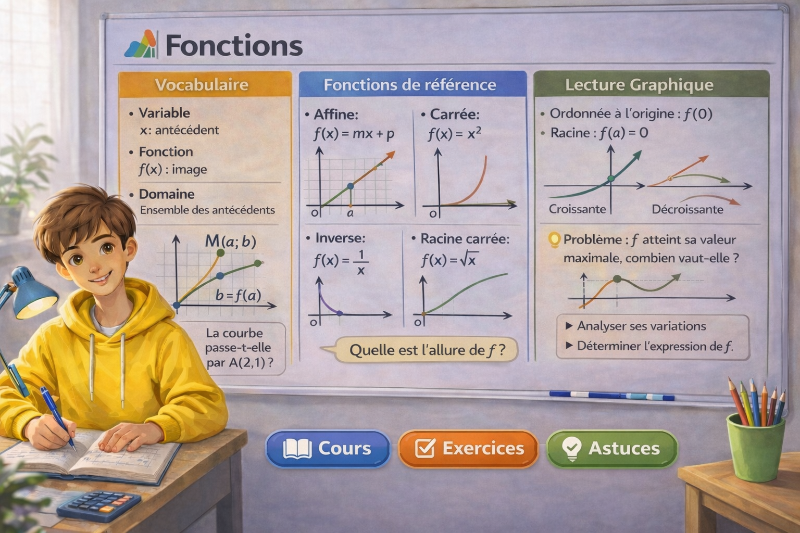

Associer une image
À un nombre de départ, une fonction associe une unique valeur appelée image.
Maths Seconde • Chapitre Fonctions
Découvre les notions essentielles du programme de seconde sur les fonctions : fonctions de référence, lecture de courbes, résolution graphique, variations et extremums.

Pourquoi ce chapitre compte
Les fonctions permettent de relier deux grandeurs, de lire des courbes, d’étudier des évolutions et de résoudre des problèmes concrets. Elles sont au cœur de nombreuses notions de mathématiques.
À un nombre de départ, une fonction associe une unique valeur appelée image.
Une représentation graphique aide à visualiser le comportement d’une fonction.
On apprend à repérer si une fonction est croissante, décroissante ou admet un extremum.
Les courbes permettent de résoudre des équations ou des inéquations sans calcul compliqué.
Vue d’ensemble
Chaque carte mène vers une page dédiée avec cours, exemples, exercices et repères essentiels.
Notion de fonction, image, antécédent, ensemble de définition, fonctions affine, carré, cube, racine carrée et inverse.
Lire une image, retrouver un antécédent, résoudre graphiquement des équations et des inéquations à partir d’une courbe.
Sens de variation, croissance, décroissance, maximum, minimum et étude de quelques fonctions usuelles.
Savoir passer d’une formule à une lecture graphique, puis d’un graphique à une interprétation claire et précise.
Repères essentiels
Avant de t’exercer, assure-toi de bien maîtriser ces bases.
L’image de x par une fonction f est la valeur obtenue en calculant f(x).
Un antécédent d’un nombre y est une valeur de x telle que f(x)=y.
Elle regroupe les points de coordonnées (x ; f(x)) dans un repère.
Une fonction est croissante quand ses images augmentent lorsque x augmente.
Vidéos pédagogiques
Deux vidéos pour accompagner le cours et visualiser les notions essentielles du chapitre.
Une vidéo pour revoir les définitions, les images, les antécédents et les fonctions usuelles du programme.
Une vidéo pour apprendre à lire un graphique et interpréter les variations d’une fonction.
Exercices interactifs
Choisis un thème puis affiche une série de 3 questions tirées au hasard.
Clique sur le bouton pour afficher 3 questions aléatoires.
Quiz automatique
Réponds aux 3 questions, suis ta progression puis corrige pour voir ton score et les explications.
Méthodes
Quelques réflexes simples pour progresser plus vite sur les fonctions.
Vérifie toujours si l’on te demande une image, un antécédent, une lecture graphique ou une étude de variation.
Utilise les bons mots : image, antécédent, courbe représentative, croissante, décroissante, maximum, minimum.
Les fonctions carré, racine carrée ou inverse servent souvent de modèles à connaître.
Entraîne-toi à passer d’une expression algébrique à une interprétation graphique.
Message rassurant
En seconde, les fonctions peuvent sembler nouvelles, mais avec des exemples simples, des courbes bien lues et des tableaux de variations, on progresse vite. L’important est d’avancer étape par étape et de s’entraîner régulièrement.